Sustainable Energy Engineering Student | Minor in Mathematics
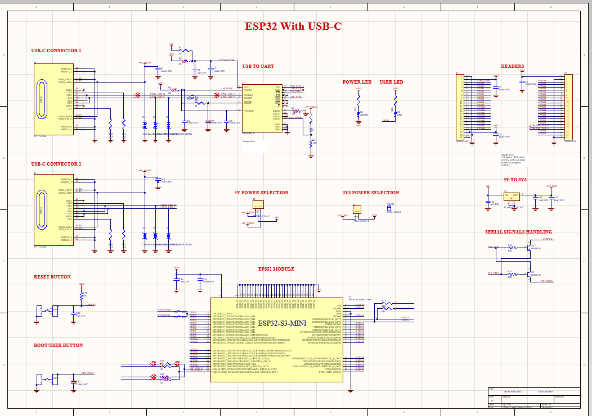
Designed a custom hardware development board centered around the ESP32-S3 ecosystem. The core objective was creating an optimized, multi-sheet schematic layout in Altium Designer to manage dual-stage voltage regulation and clean signal routing before starting physical design placement.
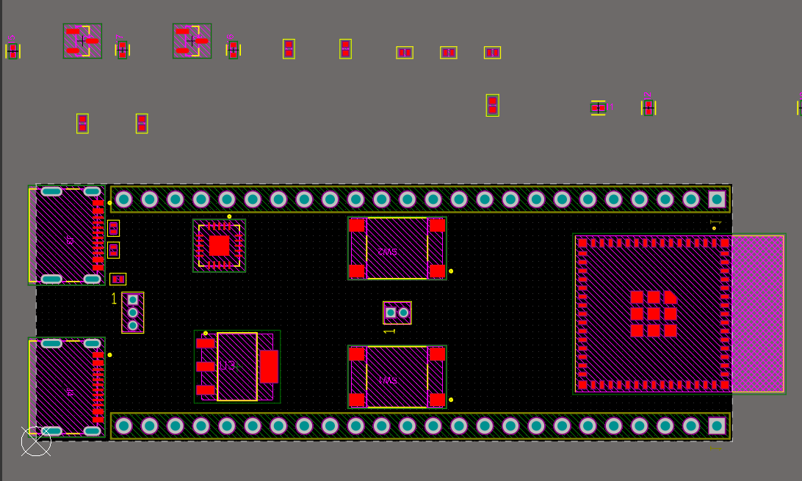
Routed data paths and power rails utilizing a multi-layer stack-up strategy. Focused on trace optimizations—identifying errors like sharp 90-degree trace angles and tight ground returns to resolve them via strict design rule checks (DRC) for enhanced manufacturability.
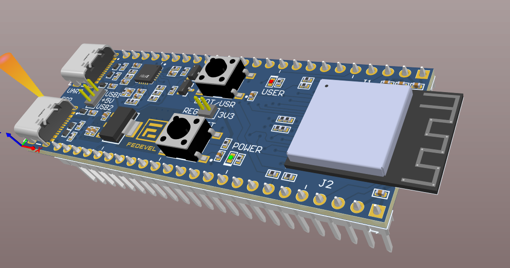
Produced a verified, production-ready 3D PCB layout architecture. The iteration cycle established an advanced engineering baseline for managing thermal relief constraints, footprint specifications, and high-frequency noise mitigation paths on localized hardware systems.
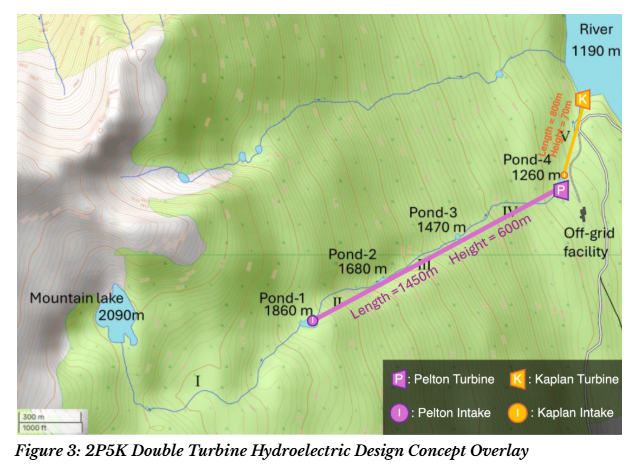
Architected a 100 kW dual-stage run-of-river hydroelectric asset design. The primary goal was to match generation technology with dynamic environmental constraints while enforcing a strict 10% seasonal stream diversion safety cap.
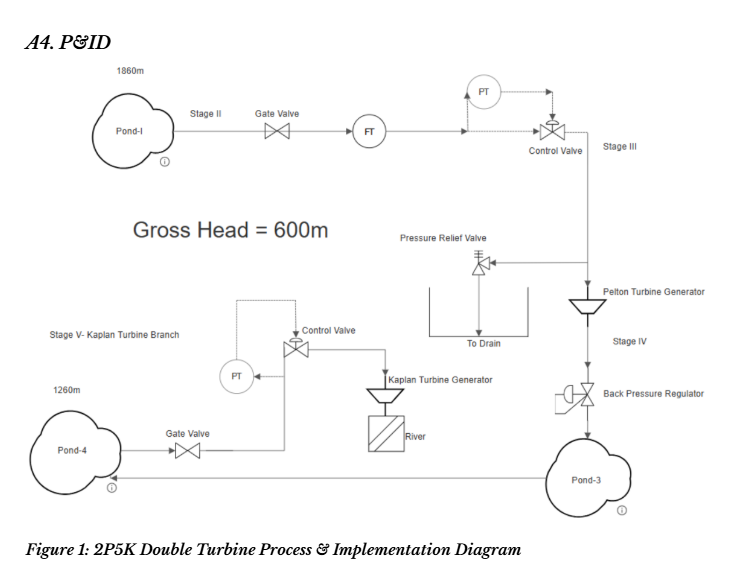
Developed a full Piping and Instrumentation Diagram (P&ID) to organize system controls. Executed fluid mechanical sizing math in Excel using the Haaland equation to balance major/minor head losses against piping diameter expenses (0.15m steel / 0.25m PVC).
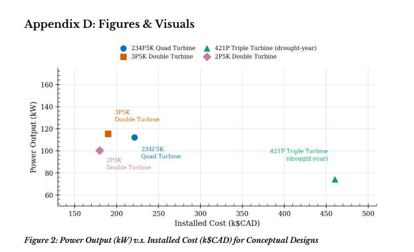
Optimized a dual-turbine system configuration—pairing an 89% efficient Pelton impulse runner and a Kaplan reaction turbine. Achieved a highly continuous 100.6 kW steady-state output with automated inline pressure safety loops to prevent water hammer failures.
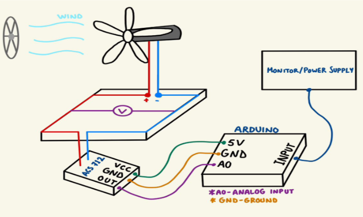
Designed and prototyped a small-scale wind turbine generation and power conditioning system. The primary focus was optimizing aerodynamic efficiency using Blade Element Momentum (BEM) theory and Tip Speed Ratio (TSR) analysis to calculate the ideal blade geometries and operational pitch angles for maximum energy capture.
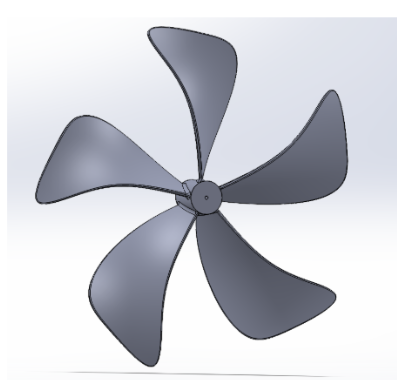
Modeled the high-efficiency turbine blade profiles within SolidWorks and translated the digital assemblies into physical prototypes using PLA 3D printing. Engineered the power conditioning subsystem by integrating a DC–DC boost converter to step up the low-voltage, variable output into a stable, usable electrical profile.
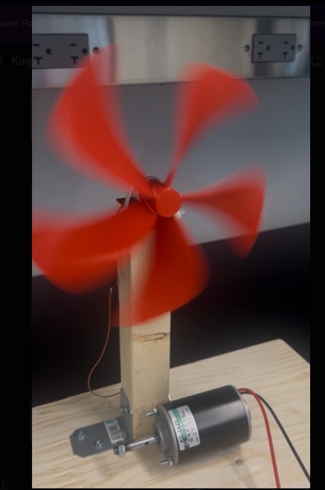
Fabricated and successfully tested a fully operational wind turbine assembly capable of reliable aerodynamic performance. Validated the experimental design under active loading, successfully measuring data acquisition paths and demonstrating practical low-voltage power regulation for local storage or load applications.
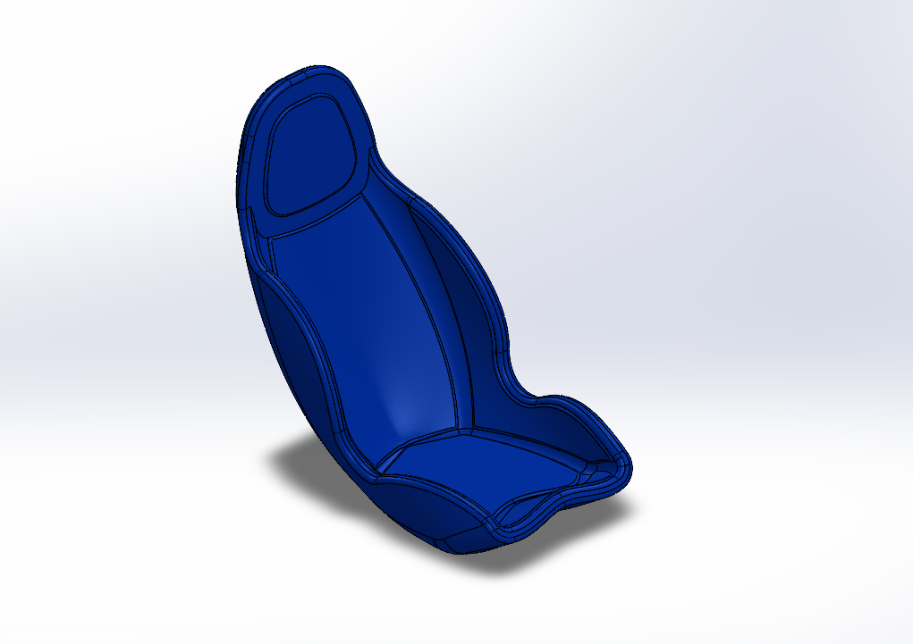
Designed and modeled a structural chassis for a high-fidelity mechanical simulation rig. Focused on ergonomics, structural integrity, and component placement to ensure realistic spatial boundaries and robust driver geometry in CAD environments.
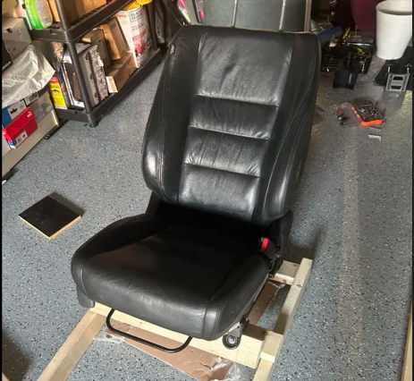
Translated digital CAD files into physical assemblies. Managed material sourcing, hardware optimization, and close-tolerance test fits to ensure the physical framework accurately reflected the modeled design constraints.
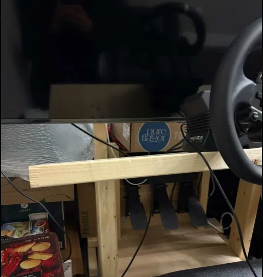
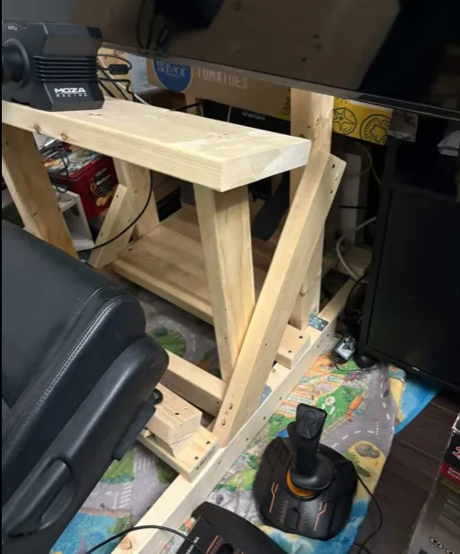
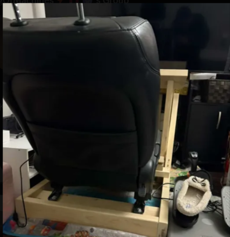
Successfully fabricated and evaluated the operational simulation rig. The completed physical hardware validated structural stress points under loading, offering an immersive, durable platform engineered to handle continuous dynamic forces.